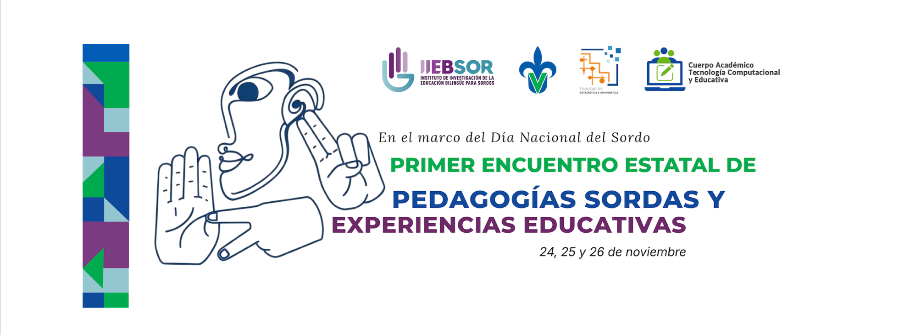

Primer Encuentro Estatal de Pedagogías Sordas y Experiencias Educativas

24 — 26 de noviembre · 2026
Encuentro, comunidad y experiencias educativas
Un espacio para compartir experiencias, prácticas pedagógicas y perspectivas de la comunidad Sorda.
Galería del encuentro
23 carteles, una conversación compartida
Explora los carteles en orden. Selecciona cualquiera para verlo ampliado.
Agenda académica · 2026
Programa del encuentro
23 actividades durante tres días. Los horarios y participantes corresponden al programa oficial adjunto.
Algunas actividades comparten horario y se presentan como sesiones simultáneas. Los títulos y nombres se conservan como aparecen en el PDF original.
Equipo organizador
Organización
Los datos institucionales de esta sección están pendientes de confirmación y se pueden actualizar en un solo archivo.